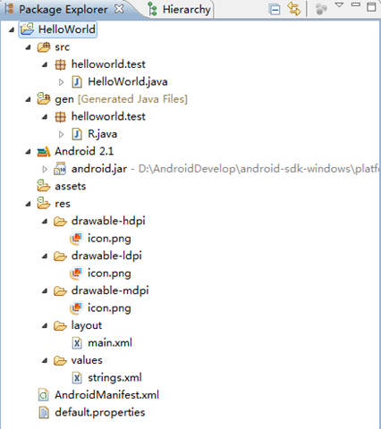
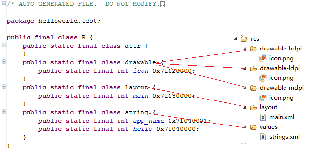

HelloWorld项目的目录结构
引言
前面环境搭建及HelloWorld，我们介绍了如何搭建Android开发环境及简单地建立一个HelloWorld项目，本篇将通过HelloWorld项目来介绍Android项目的目录结构。本文的主要主题如下：
1、HelloWorld项目的目录结构1.1、src文件夹
1.2、gen文件夹
1.3、Android 2.1文件夹
1.4、assets
1.5、res文件夹
1.6、AndroidManifest.xml
1.7、default.properties
1、HelloWorld项目的目录结构
（这个HelloWorld项目是基于Android 2.1的）在Eclipse的左侧展开HelloWorld项目，可以看到如下图的目录结构：

下面将分节介绍上面的各级目录结构。
1.1、src文件夹
顾名思义（src, source code）该文件夹是放项目的源代码的。打开HelloWorld.java文件会看到如下代码：
import android.R;import android.app.Activity;
import android.os.Bundle;
public class HelloWorld extends Activity {
/** Called when the activity is first created. */
@Override
public void onCreate(Bundle savedInstanceState) {
super.onCreate(savedInstanceState);
setContentView(R.layout.main);
}
}
可以知道：我们新建一个简单的HelloWorld项目，系统为我们生成了一个HelloWorld.java文件。他导入了两个类android.app.Activity和android.os.Bundle，HelloWorld类继承自Activity且重写了onCreate方法。
以下说明针对没有学过Java或者Java基础薄弱的人@Override
在重写父类的onCreate时，在方法前面加上@Override 系统可以帮你检查方法的正确性。
例如，
public void onCreate(Bundle savedInstanceState){…….}
这种写法是正确的，如果你写成
public void oncreate(Bundle savedInstanceState){…….}
这样编译器回报如下错误――The method oncreate(Bundle) of type HelloWorld must override or implement a supertype method，以确保你正确重写onCreate方法。（因为oncreate应该为onCreate）
而如果你不加@Override，则编译器将不会检测出错误，而是会认为你新定义了一个方法oncreate。
android.app.Activity类：
因为几乎所有的活动（activities）都是与用户交互的，所以Activity类关注创建窗口，你可以用方法setContentView(View)将自己的UI放到里面。然而活动通常以全屏的方式展示给用户，也可以以浮动窗口或嵌入在另外一个活动中。有两个方法是几乎所有的Activity子类都实现的：
1、onCreate(Bundle)：初始化你的活动（Activity），比如完成一些图形的绘制。最重要的是，在这个方法里你通常将用布局资源（layout resource）调用setContentView(int)方法定义你的UI，和用findViewById(int)在你的UI中检索你需要编程地交互的小部件（widgets）。setContentView指定由哪个文件指定布局（main.xml），可以将这个界面显示出来，然后我们进行相关操作，我们的操作会被包装成为一个意图，然后这个意图对应有相关的activity进行处理。
2、onPause()：处理当离开你的活动时要做的事情。最重要的是，用户做的所有改变应该在这里提交（通常ContentProvider保存数据）。
更多的关于Activity类的详细信息此系列以后的文章将做介绍，如果你想了解更多请参阅相关文档。
android.os.Bundle类：
从字符串值映射各种可打包的（Parcelable）类型（Bundle单词就是捆绑的意思，所有这个类很好理解和记忆）。如该类提供了公有方法――public boolean containKey(String key)，如果给定的key包含在Bundle的映射中返回true，否则返回false。该类实现了Parceable和Cloneable接口，所以它具有这两者的特性。
1.2、gen文件夹
该文件夹下面有个R.java文件，R.java是在建立项目时自动生成的，这个文件是只读模式的，不能更改。R.java文件中定义了一个类――R，R类中包含很多静态类，且静态类的名字都与res中的一个名字对应，即R类定义该项目所有资源的索引。看我们的HelloWorld项目是不是如此，如下图：

通过R.java我们可以很快地查找我们需要的资源，另外编绎器也会检查R.java列表中的资源是否被使用到，没有被使用到的资源不会编绎进软件中，这样可以减少应用在手机占用的空间。
1.3、Android 2.1文件夹
该文件夹下包含android.jar文件，这是一个Java 归档文件，其中包含构建应用程序所需的所有的Android SDK 库（如Views、Controls）和APIs。通过android.jar将自己的应用程序绑定到Android SDK和Android Emulator，这允许你使用所有Android的库和包，且使你的应用程序在适当的环境中调试。例如上面的HelloWorld.java源文件中的：
import android.app.Activity;import android.os.Bundle;
这里两行代码就是从android.jar导入包。
1.4、assets
包含应用系统需要使用到的诸如mp3、视频类的文件。
1.5、res文件夹
资源目录，包含你项目中的资源文件并将编译进应用程序。向此目录添加资源时，会被R.java自动记录。新建一个项目，res目录下会有三个子目录：drawabel、layout、values。
drawabel-?dpi：包含一些你的应用程序可以用的图标文件(*.png、*.jpg)
layout：界面布局文件(main.xml)与WEB应用中的HTML类同，没修改过的main.xml文件如下（HelloWorld的就没有修改过）：
<?xml version="1.0" encoding="utf-8"?><LinearLayout xmlns:android="http://schemas.android.com/apk/res/android"
android:orientation="vertical"
android:layout_width="fill_parent"
android:layout_height="fill_parent"
>
<TextView
android:layout_width="fill_parent"
android:layout_height="wrap_content"
android:text="@string/hello"
/>
</LinearLayout>
values：软件上所需要显示的各种文字。可以存放多个*.xml文件，还可以存放不同类型的数据。比如arrays.xml、colors.xml、dimens.xml、styles.xml
1.6、AndroidManifest.xml
项目的总配置文件，记录应用中所使用的各种组件。这个文件列出了应用程序所提供的功能，在这个文件中，你可以指定应用程序使用到的服务(如电话服务、互联网服务、短信服务、GPS服务等等)。另外当你新添加一个Activity的时候，也需要在这个文件中进行相应配置，只有配置好后，才能调用此Activity。AndroidManifest.xml将包含如下设置：application permissions、Activities、intent filters等。
如果你跟我一样是ASP.NET出生或者学过，你会发现AndroidManifest.xml跟web.config文件很像，可以把它类同于web.config文件理解。
如果你不是，你可以这样理解――众所周知xml是一种数据交换格式，AndroidManifest.xml就是用来存储一些数据的，只不过这些数据时关于android项目的配置数据。
HelloWorld项目的AndroidManifest.xml如下所示：
<?xml version="1.0" encoding="utf-8"?><manifest xmlns:android="http://schemas.android.com/apk/res/android"
package="helloworld.test"
android:versionCode="1"
android:versionName="1.0">
<application android:icon="@drawable/icon" android:label="@string/app_name">
<activity android:name=".HelloWorld"
android:label="@string/app_name">
<intent-filter>
<action android:name="android.intent.action.MAIN" />
<category android:name="android.intent.category.LAUNCHER" />
</intent-filter>
</activity>
</application>
</manifest>
关于AndroidManifest.xml现在就讲这么多，此系列后面的文章将单独详细介绍。
1.7、default.properties
记录项目中所需要的环境信息，比如Android的版本等。 HelloWorld的default.properties文件代码如下所示，代码中的注释已经把default.properties解释得很清楚了：
This file is automatically generated by Android Tools.Do not modify this file -- YOUR CHANGES WILL BE ERASED!
This file must be checked in Version Control Systems.
To customize properties used by the Ant build system use,
"build.properties", and override values to adapt the script to your
project structure.
Indicates whether an apk should be generated for each density.
split.density=false
Project target.
target=android-7